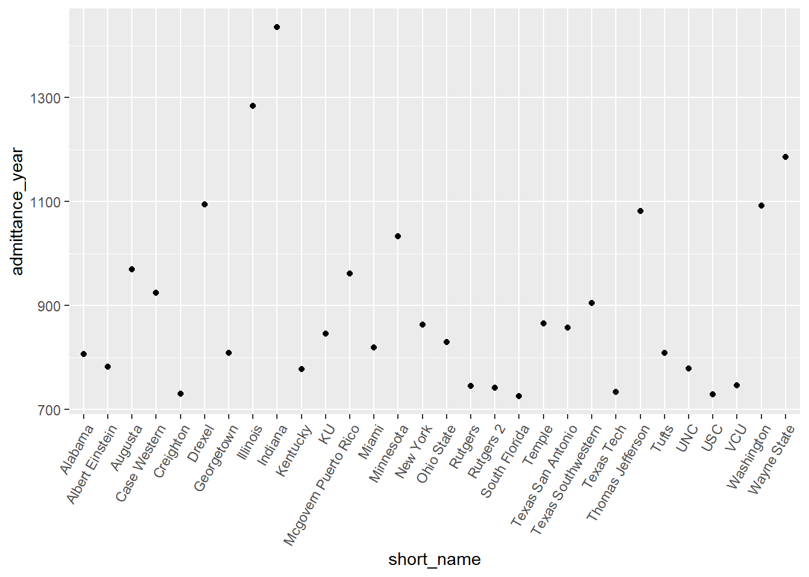
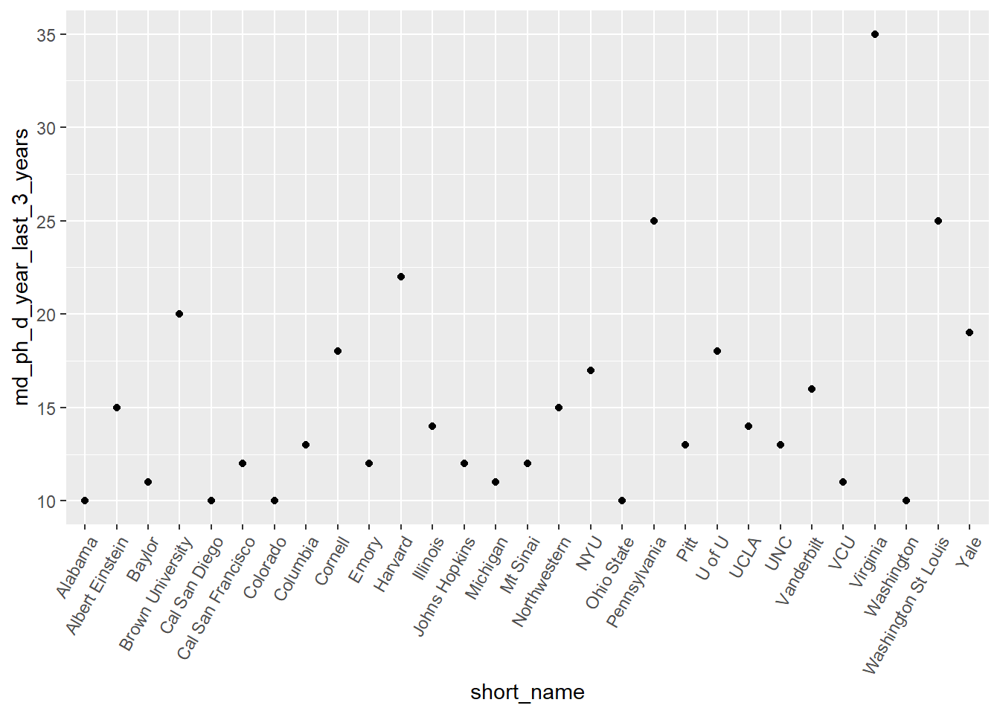
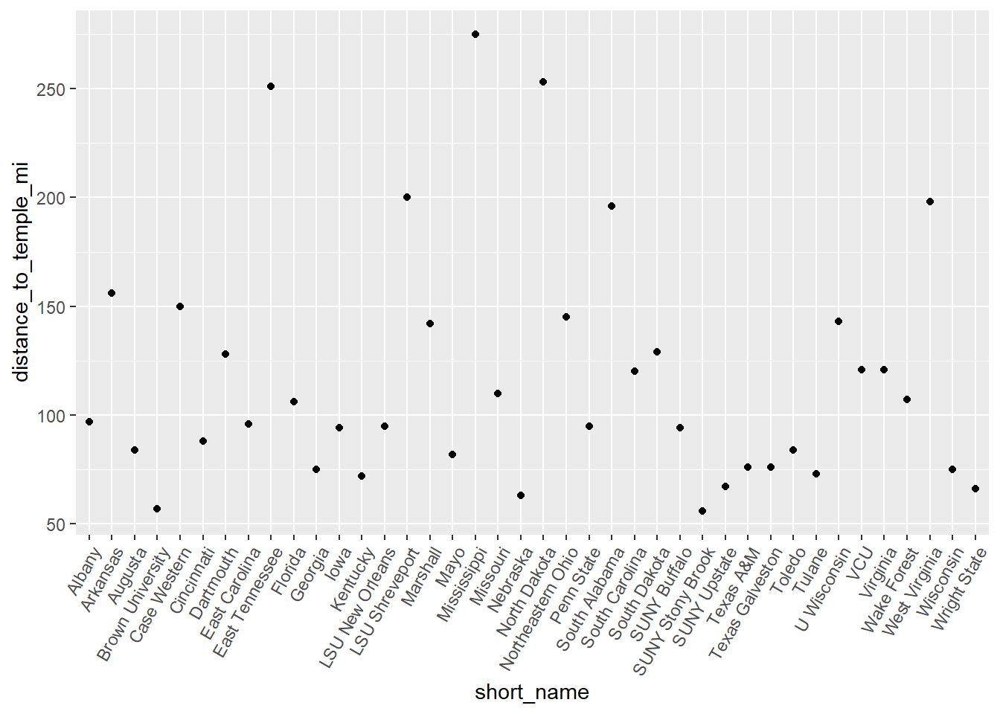
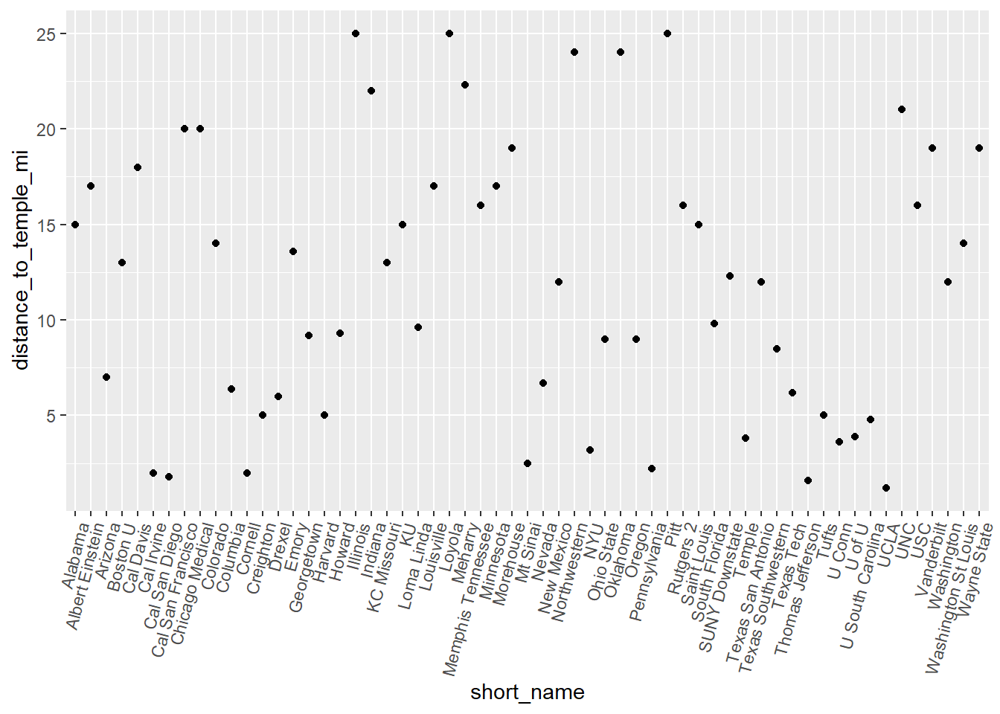
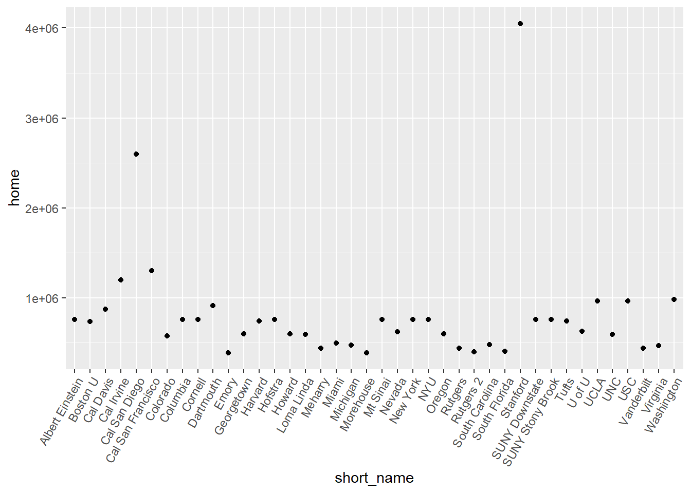

Warning in validateCoords(lng, lat, funcName): Data contains 3 rows with either
missing or invalid lat/lon values and will be ignoredInitial
Maps
Here is a description of all the MD/PhD programs offered in the nation. There are 115 schools, and my initial impression is how densely populated the schools are back east. Not a ton of Western options.
Data
Total Admittance
Here is the top 30 Total MD Admittance according to school.
short_name admittance_year
1 Indiana 1436
2 Illinois 1284
3 Wayne State 1186
4 Drexel 1095
5 Washington 1092
6 Thomas Jefferson 1082
7 Minnesota 1033
8 Augusta 969
9 Mcgovern Puerto Rico 962
10 Case Western 924
11 Texas Southwestern 905
12 Temple 866
13 New York 863
14 Texas San Antonio 857
15 KU 846
16 Ohio State 830
17 Miami 819
18 Georgetown 809
19 Tufts 809
20 Alabama 806
21 Albert Einstein 782
22 UNC 779
23 Kentucky 778
24 VCU 746
25 Rutgers 745
26 Rutgers 2 742
27 Texas Tech 733
28 Creighton 730
29 USC 729
30 South Florida 726
This is for medical students overall, not just MD/PhD students. It seems awfully toploaded. This is a good basis to understand where my odds of acceptance may be higher than in others.
Exploring admittance for MD/PhD students is important as well.
MD/PhD Admittance
Here is the top 30 MD/PhD admittance according to school.
short_name md_ph_d_year_last_3_years
1 Virginia 35
2 Washington St Louis 25
3 Pennsylvania 25
4 Harvard 22
5 Brown University 20
6 Yale 19
7 U of U 18
8 Cornell 18
9 NYU 17
10 Vanderbilt 16
11 Northwestern 15
12 Albert Einstein 15
13 Illinois 14
14 UCLA 14
15 Pitt 13
16 Pitt 13
17 UNC 13
18 Columbia 13
19 Johns Hopkins 12
20 Cal San Francisco 12
21 Emory 12
22 Mt Sinai 12
23 VCU 11
24 Michigan 11
25 Baylor 11
26 Alabama 10
27 Colorado 10
28 Washington 10
29 Ohio State 10
30 Cal San Diego 10
Not many students admitted each year across the board. It may be interesting to see the percentage of MD/PhD students admitted versus MD students admitted.
MD vs MD/PhD Admittance %
short_name admitpercent
1 Washington St Louis 5.580357
2 Virginia 5.537975
3 Yale 4.656863
4 NYU 4.156479
5 Pennsylvania 3.993610
6 Cornell 3.991131
7 Vanderbilt 3.911980
8 U of U 3.680982
9 Brown University 3.294893
10 Harvard 3.147353
11 Johns Hopkins 2.553191
12 Northwestern 2.311248
13 Mt Sinai 2.259887
14 Columbia 2.253033
15 Mayo 2.200489
16 Pitt 2.131148
17 Pitt 2.131148
18 Rochester 2.054795
19 Emory 2.023609
20 UCLA 1.941748
21 Cal San Diego 1.919386
22 Albert Einstein 1.918159
23 Cal San Francisco 1.857585
24 Stanford 1.832994
25 U Conn 1.769912
26 UNC 1.668806
27 SUNY Stony Brook 1.651376
28 Arizona 1.629328
29 Michigan 1.582734
30 Duke 1.577909
This graph shows us the highest percentage of MD/PhD students per the total of those admitted to medical school. Again, sort of a highest odds, kind of thing.
40 Furthest Distance from Temple
short_name distance_to_temple_mi
1 Mississippi 275
2 North Dakota 253
3 East Tennessee 251
4 LSU Shreveport 200
5 West Virginia 198
6 South Alabama 196
7 Arkansas 156
8 Case Western 150
9 Northeastern Ohio 145
10 U Wisconsin 143
11 Marshall 142
12 South Dakota 129
13 Dartmouth 128
14 Virginia 121
15 VCU 121
16 South Carolina 120
17 Missouri 110
18 Wake Forest 107
19 Florida 106
20 Albany 97
21 East Carolina 96
22 LSU New Orleans 95
23 Penn State 95
24 Iowa 94
25 SUNY Buffalo 94
26 Cincinnati 88
27 Augusta 84
28 Toledo 84
29 Mayo 82
30 Texas A&M 76
31 Texas Galveston 76
32 Georgia 75
33 Wisconsin 75
34 Tulane 73
35 Kentucky 72
36 SUNY Upstate 67
37 Wright State 66
38 Nebraska 63
39 Brown University 57
40 SUNY Stony Brook 56
The temple is entirely important to me, so let’s see which medical schools are the furthest from the temple.
60 Closest Distance to Temple
short_name distance_to_temple_mi
1 UCLA 1.2
2 Thomas Jefferson 1.6
3 Cal San Diego 1.8
4 Cal Irvine 2.0
5 Cornell 2.0
6 Pennsylvania 2.2
7 Mt Sinai 2.5
8 NYU 3.2
9 U Conn 3.6
10 Temple 3.8
11 U of U 3.9
12 U South Carolina 4.8
13 Harvard 5.0
14 Tufts 5.0
15 Creighton 5.0
16 Drexel 6.0
17 Texas Tech 6.2
18 Columbia 6.4
19 Nevada 6.7
20 Arizona 7.0
21 Texas Southwestern 8.5
22 Ohio State 9.0
23 Oregon 9.0
24 Georgetown 9.2
25 Howard 9.3
26 Loma Linda 9.6
27 South Florida 9.8
28 New Mexico 12.0
29 Texas San Antonio 12.0
30 Washington 12.0
31 SUNY Downstate 12.3
32 Boston U 13.0
33 KC Missouri 13.0
34 Emory 13.6
35 Colorado 14.0
36 Washington St Louis 14.0
37 Alabama 15.0
38 KU 15.0
39 Saint Louis 15.0
40 USC 16.0
41 Rutgers 2 16.0
42 Memphis Tennessee 16.0
43 Louisville 17.0
44 Minnesota 17.0
45 Albert Einstein 17.0
46 Cal Davis 18.0
47 Morehouse 19.0
48 Wayne State 19.0
49 Vanderbilt 19.0
50 Cal San Francisco 20.0
51 Chicago Medical 20.0
52 UNC 21.0
53 Indiana 22.0
54 Meharry 22.3
55 Northwestern 24.0
56 Oklahoma 24.0
57 Pitt 25.0
58 Pitt 25.0
59 Illinois 25.0
60 Loyola 25.0
And this shows the ones that are closest to the temple.
40 Lowest Home Prices
short_name home
1 Wayne State 66000
2 Mississippi 81000
3 Case Western 106000
4 Wright State 106000
5 Toledo 108000
6 SUNY Upstate 139000
7 Marshall 140000
8 Rochester 149000
9 Memphis Tennessee 149000
10 Augusta 163000
11 Georgia 163000
12 Alabama 169900
13 KU 171000
14 Saint Louis 172000
15 Washington St Louis 172000
16 South Alabama 175000
17 Wisconsin 180000
18 LSU Shreveport 185000
19 Oklahoma 192000
20 Texas Tech 201000
21 U South Carolina 206000
22 SUNY Buffalo 209000
23 Johns Hopkins 210000
24 Maryland 210000
25 Indiana 217000
26 Arkansas 224000
27 South Dakota 224000
28 KC Missouri 226000
29 Louisville 228000
30 Cincinnati 229000
31 Drexel 230000
32 Temple 230000
33 Pennsylvania 230000
34 Thomas Jefferson 230000
35 Loyola 234000
36 Pitt 237000
37 Pitt 237000
38 Ohio State 237000
39 Albany 239000
40 East Carolina 250000
An interesting part of data, but not one that I think I need to use to make the decision of what schools to apply to. This would be important for a tertiary level of decision making, or even as a means to help decide after being accepted to multiple schools.
40 Highest Home Prices
short_name home
1 Stanford 4047000
2 Cal San Diego 2600000
3 Cal San Francisco 1300000
4 Cal Irvine 1200000
5 Washington 984000
6 USC 965000
7 UCLA 965000
8 Dartmouth 912000
9 Cal Davis 875000
10 SUNY Stony Brook 759000
11 Hofstra 759000
12 New York 759000
13 Albert Einstein 759000
14 SUNY Downstate 759000
15 Columbia 759000
16 NYU 759000
17 Mt Sinai 759000
18 Cornell 759000
19 Tufts 741000
20 Harvard 740000
21 Boston U 739000
22 U of U 625000
23 Nevada 624000
24 Howard 600000
25 Georgetown 600000
26 Oregon 600000
27 UNC 591000
28 Loma Linda 591000
29 Colorado 575000
30 Miami 494000
31 South Carolina 477000
32 Michigan 471000
33 Virginia 467000
34 Rutgers 439000
35 Meharry 437000
36 Vanderbilt 437000
37 South Florida 405000
38 Rutgers 2 402000
39 Morehouse 390000
40 Emory 390000
Again, not a decision maker, but something to be mindful of for the future.